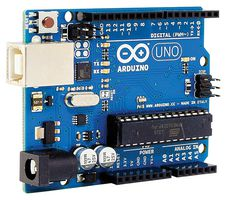
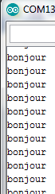

 |
Moniteur série |
Cette ressource va permettre d'afficher un message sur le PC indiquant un état donné de la carte.
Exemple 1 : afficher un texte
/* Affichage d'un message type texte sur le moniteur série "bonjour" */ void setup() { Serial.begin(9600); // paramétrage de le vitesse en bit/seconde, mettre majuscule a Serial } void loop() { Serial.print("bonjour"); // affichage du texte entre guillemets } |
Lancer le moniteur série (deux méthodes au choix)
Commentaire sur le fonctionnement obtenu le mot « bonjour » défile sans cesse… pas facile de lire
.
Exemple 2 : utilisation de "serialprintln".
/* Utilisation de Serialprintln. Affichage d'un message type texte sur le moniteur serie "bonjour"Controle d'un servo moteur à partir d'un potentiomètre */ void setup() { Serial.begin(9600); // paramétrage de le vitesse en bit/seconde, mettre majuscule a Serial } void loop() { Serial.println("bonjour"); // affichage du texte entre guillemets } |
Lancer le moniteur série.
Commentaire le mot « bonjour » s'affiche sur une colonne.

Exemple 3 : utilisation de serialprintln affichage sur deux colonnes (texte et valeur)
Un potentiomètre est raccordé sur A0
/* Utilisation de Serialprintln. Capteur branché sur entrée A0 on affiche sa valeur avec texte légende de 0 à 1023 */ void setup() { Serial.begin(9600); // paramétrage de le vitesse en bit/seconde, mettre majuscule a Serial } void loop() { int ValeurentreeanalogA0 = analogRead(A0); Serial.println(ValeurentreeanalogA0); // affichage de la valeur lue sur A0 Serial.print("valeur du capteur sur A0: "); // affichage du texte entre guillemets } } |
Commentaire: le texte « valeur du capteur sur A0: » s'affiche suivi de la valeur de 0 à 1023 (fonction du potentiomètre).
Si on veut afficher un angle, une température,... il faudra faire un calcul pour avoir une conversion.
Créé avec HelpNDoc Personal Edition: Générateur d'aides Web gratuit